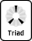

Nejen při návrhu webových stránek, ale čehokoli, kde se používají barvy (počítačové aplikace, návrh interiéru atd.), potřebujeme najít vhodné barevné schéma — tedy sadu barev, které mají produkovat co nejlepší celkový dojem. Ne všechny barvy však mohou koexistovat, některé kombinace působí nepříjemně či rušivě.
Zkušení designéři mají kombinace "v oku", mnozí lidé poznají, které barvy spolu ladí a které ne. Někdy je ale nalezení dobré kombinace zdlouhavá a úmorná práce. Díky teorii barev je však možné si ji usnadnit — tento nástroj najde sadu barev, z níž je možné při návrhu vycházet, a usnadnit tak hledání optimální palety.
Tato aplikace generuje barevná schémata několika typů. Každé vychází z jedné základní barvy, k níž doplní několik dalších barev, které společně dosahují nejlepšího optického dojmu — vždy podle jednoho z ověřených algoritmů.
Výchozí barvu, z níž je barevné schéma postaveno, můžeme definovat několika způsoby. Tato aplikace pracuje s barevným kruhem a tedy s barvami definovanými pomocí něj — tj. s odstínem, jemuž odpovídá úhel určující pozici barvy na kruhu. Jsou zde také vyznačeny barvy teplé ("warm", purpurová až žlutá) a studené ("cold", žlutozelená až fialová).
Kliknutím na barevný proužek barevného kruhu můžeme vybrat přímo jednu ze základních barev. Primární barvy (červená, žlutá, modrá) odpovídají úhlům 0°, 120°, resp. 240°, sekundární (oranžová, zelená, fialová) pak úhlům 60°, 180° a 300°, terciární barvy jsou mezi nimi. Kruh také obsahuje i přechodové barvy — ty odpovídají násobkům 15°. Kliknutím na jednu z těchto barev ji nastavíte jako základní.
Kliknutím do vnitřního kruhu lze vybrat odstín ještě přesněji. Odpovídající úhel se při pohybu myši zobrazuje ve stavovém řádku prohlížeče. Navíc je zde rozdíl oproti výběru základních barev z vnějšího kruhu: při výběru úhlu zůstávají zachovány vybrané varianty barev, zatímco při výběru základní barvy z vnějšího kruhu se všechny varianty nastaví na výchozí hodnoty.
Důležitá pozn.: Zde použitý barevný kruh se liší od spektra RGB používaného na obrazovkách a odpovídá více klasické teorii barev. Některé základní barvy (především odstíny modré, tyrkysové a fialové) tvoří odstíny s menším jasem oproti základním barvám RGB modelu. RGB spektrum navíc tvoří kruh s primárními barvami červená-zelená-modrá, zde je to ale červená-žlutá-modrá — tato deformace je také hlavní příčinou toho, že zde použitý model naprosto neodpovídá obvyklému modelu HSV, známému z grafickým programů. Nečekejte proto, že pod stejnou hodnotou odstínu zde najdete stejnou barvu jako třeba ve Photoshopu. Také proto je zadání barvy v RGB pouze informativní, konverze je pouze přibližná a někdy může produkovat mírně odlišnou barvu, než byla zadána.
Každá z barev v zobrazovaném schématu má čtyři své varianty. Jsou to barvy téhož odstínu, liší se jen sytostí a světlostí. Kliknutím na čtvereček u zvolené barvy můžeme vybrat vhodnou variantu. První varianta (největší čtvereček) určuje vzhled základní barvy schématu, ostatní tři jsou pouze doplňkové. Pokud schéma tvoří méně než čtyři barvy, na místě nepoužitých barev jsou zobrazeny doplňkové varianty výchozí barvy (u kontrastního schématu i varianta barvy kontrastní).
Pro rychlé nastavení typické sady barevných variant je pod plochou se vzorníkem barev připraveno několik typických variant (pastelové, kontrastní atd.). Kliknutím na některé z tlačítek nastavíte příslušnou sadu variant všem barvám najednou.
Výsledná sada barev vznikne dosazením zvolené výchozí barvy do jednoho z barevných schémat. Schéma vybíráte kliknutím na příslušnou kartu schématu pod barevným kruhem. Některá schémata umožňují další nastavení, která se případně zobrazí ještě pod těmito kartami. Popis jejich nastavení naleznete níže v popisu jednotlivých schémat. Můžete si vybrat jedno z následujích barevných schémat:
Barevné schéma vychází z jediného odstínu a používá jen variací vzniklých změnou sytosti a jasu, doplněné o černou a bílou. Výsledek, na něž je aplikováno toto schéma, je celkem příjemný pro oči, a to i v jinak poměrně agresivních odstínech. Je však již těžší vytvořit nějaká zvýraznění či podtržení barevného tónu.
Program vytváří jen několik monochromatických variant každé barvy, není jistě problém vytvořit další — sytější, světlejší, či tmavší. Monochromatické variace jsou vytvořeny také pro všechny barvy v ostatních schématech, zobrazeny jsou jako menší čtverečky u každé z barev.
Základní barva je doplněna o svůj doplněk (barvu přesně na opačné straně barevného kola). Vznikne tak vždy jedna teplá a jedna studená barva — je potom na zvážení, která z nich bude dominantní, a celek podle toho bude působit teplejším či chladnějším dojmem. Schéma lze pak doplnit o vhodné monochromatické variace těchto dvou barev.

K základní barvě jsou doplněny dvě barvy, nacházející shodně po obou stranách od jejího doplňku. Na rozdíl od "ostrého" kontrastu je tato varianta často pro oko příjemnější, měkčí, navíc poskytuje větší prostor pro vyvážení teplých a studených barev.Kliknutím na posuvník (zobrazí se pod volbou schématu) lze určit odstup těchto barev od doplňku základní barvy — čím menší hodnota, tím jsou barvy podobnější a blíže k barvě kontrastní. Ideální bývají hodnoty kolem čtvrtiny až poloviny stupnice. Vyšší hodnoty již nejsou příliš vhodné — výjimkou je posun o maximální hodnotu (60°), který tvoří specifické barevné schéma, tzv. triádu:
Triáda je tvořena třemi barvami rovnoměrně rozloženými na třetinách barevného kruhu (po 120 stupních). Tato schémata jsou "vibrující", plná energie a poskytují velký prostor pro vytváření kontrastů, zvýraznění a vyvážení teplých a studených barev. Triádu vytvoříte pomocí tohoto schématu s odstupem nastaveným na maximum (posuvník zcela vpravo).
Toto schéma je tvořeno dvojicí barev a jejich doplňky. Vychází z tzv. tetrády — tedy čtveřice barev rozmístěných rovnoměrně na čtvrtinách kruhu (po 90°). Tetráda je velmi agresivní barevné schéma, vyžadující velmi dobré naplánování a citlivý přístup k vzájemným vazbám jednotlivých barev.
Menší rozestup mezi dvěma základními barvami dá celku menší napětí, toto schéma je ale i tak vždy dost "nervní" a "akčnější" než schémata ostatní. Při práci s ním je třeba dát si hlavně pozor na vazby jedné barvy s protějškem barvy sousední — v případě tetrády (maximální hodnota 90°, posuvník zcela vpravo) jsou pak citlivý přístup a dobré oko zcela nezbytné.
Toto schéma tvoří základní barva a její barvy sousední — tedy barvy shodně po obou stranách. Vypadá většinou velmi elegantně a čistě, ve výsledku je menší napětí a působí jednotně teple či studeně. Pokud zvolíte barvu na hranici teplých a studených odstínů, lze tu sousední barvu, která má opačnou "teplotu", použít pro zvýraznění a podtržení barev zbývajících.
Posuvníkem můžete zvolit odstup sousedních barev — ideální opět bývají hodnoty mezi čtvrtinou a polovinou škály (15-30°). Můžete zde také přidat kontrastní barvu, do schématu tak přibude barva doplňková k barvě základní. Považujte ji však jen za doplňující — přidává paletě napětí a v přehnané míře působí příliš agresivně, použitá v v detailech a pro podtržení hlavních barev však může být velmi účinná a elegantní.
Žádné takové barevné schéma zde nenajdete — je to naopak schéma, které nedokážete "vecpat" do žádného z pravidel zde uvedených. Takové schéma nemusí být úplně zbytečné. Mohou nastat situace, kdy je třeba připravit dílo šokující, opravdu křiklavé. I v tomto případě může být tato stránka užitečná — pokud se vaše schéma diametrálně liší od všech uvedených modelů, máte patrně to pravé: nervní, řvavou, agresivní sadu barev. Je však pochopitelné, že taková sada není vhodná tam, kde hlavním záměrem výsledku nejsou pouze takovéto vypjaté emoce.
Přepínačem "Omezit na bezpečné barvy" můžete zapnout použití tzv. bezpečných barev. Všechny barvy ve schématu budou redukovány do barevného prostoru 216 barev (WebColors). I když dnes toto omezení nemá příliš velký význam, pro někoho může být stále užitečné. Tento převod mění odstíny barev a odladěné barevné schéma může zdeformovat. Pokud tuto funkci chcete využít, použijte raději jen takové barvy, které se po převodu na WebColors od původních příliš neliší.
Vpravo dole se nachází přepínač simulace poruch barevného vidění. Obsahuje různé typy poruch barvocitu a pokud některou z těchto možností vyberete, zobrazené barvy se změní do podoby, v jaké je přibližně vidí člověk, který má uvedenou vadu vnímání barev. Tato funkce slouží jen pro kontrolu, zda náhodou vytvořené schéma nebude těžko přístupné pro osoby s těmito poruchami vidění — výsledné kódy barev to nijak neovlivňuje.
Tabulka v pravé části zobrazuje aktuální kódy všech zobrazených barev. Simulace poruch barevného vidění na tyto kódy nemá vliv, omezení na bezpečné barvy však ano. Pro každou barvu je zobrazena její zvolená základní podoba a pod ní další tři varianty. Kliknutím na šipku vpravo provedete rotaci použitých variant. Můžete tak zvolit jako základní některou jinou z připravených variant a posoudit, jak vypadá zobrazena na větší ploše.
Konečná paleta barev je základem pro další práci designéra. Nikde není řečeno, že se musí použít všechny barvy, které se v paletě vyskytují. Pro zachování záměru barevného schématu by monochromatické varianty neměly být nadužívány, většinou se doporučuje použít jen černou a bílou. Pokud další varianty opravdu potřebujeme, vyberme jen několik variant základní barvy, pro doplnění případně jednu či dvě varianty jedné z kontrastních barev. Druhým možným použitím je také stejná varianta všech hlavních barev (např. stejný motiv ve světlejších, bledších či tmavších odstínech). Obecně platí, že jedna aplikace (např. jedna WWW stránka, či celý web) by měla kromě černé a bílé používat nejvýše šest barev (včetně všech variant). To, aby spolu dobře ladily, vám snad pomůže zajistit tato pomůcka.
Pozn.: Pod odkazem "URL tohoto schématu" se v každém okamžiku skrývá URL právě zobrazené barevné palety a všech aktuálních nastavení. Můžete si tak například na právě vytvořenou sadu barev vytvořit záložku, napsat seznam svých oblíbených barevných sad i s názvy a popisy, nebo odkaz na hotové schéma poslat e-mailem k posouzení.
Tento produkt je šířen pod licencí BY-NC-SA. Licence pro komerční užití neposkytuji.
Stáhněte si celou aplikaci pro použití offline: colorscheme2.zip [ZIP, 50 KB]
Wellstyled.com →
Nástroje →
Generátor barevných schémat 2 →
Informace & Nápověda
Copyright pixy (c) 2002-2005